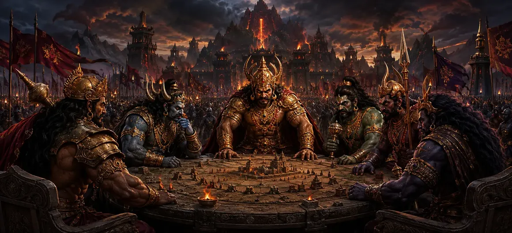

युद्ध खण्ड का अध्याय 8, 'द डेमन जनरल्स असेंबल', धर्म की रक्षा करने वाली ताकतों और वर्चस्व से प्रेरित शक्तियों के बीच संघर्ष का पवित्र विवरण जारी रखता है। इस स्तर पर, असुर कमांडर अपनी सेनाओं की व्यवस्था करते हैं और भौतिक शक्ति में विश्वास प्रदर्शित करते हैं। कथा युद्ध को हिंसा के उत्सव के रूप में नहीं, बल्कि उत्पीड़न के प्रति गंभीर प्रतिक्रिया के रूप में प्रस्तुत करती है जब शांति, न्याय और लोकों की स्वतंत्रता को खतरे में डाल दिया गया हो।
अध्याय यह दिखाते हुए शुरू होता है कि कैसे पहले के विकल्पों ने वर्तमान संकट पैदा किया है। असुर सेनापति अपनी सेनाओं की व्यवस्था करते हैं और भौतिक शक्ति में विश्वास प्रदर्शित करते हैं। डर तेज़ी से फैलता है, फिर भी बुद्धिमान लोग डर को भ्रम नहीं बनने देते। वे दुनिया की स्थिति का निरीक्षण करते हैं, अफवाह से तत्काल खतरे को अलग करते हैं, और याद रखते हैं कि धर्म को उन लोगों के लिए करुणा और उन लोगों के प्रति दृढ़ता की आवश्यकता होती है जो जानबूझकर पीड़ा पहुंचाते हैं।
दोनों पक्षों के नेता अपने निकटतम खड़े योद्धाओं की तुलना में कहीं अधिक प्रभावित करते हैं। आदेश, वादे और उदाहरण संपूर्ण मेजबानों की भावना को आकार देते हैं। इसलिए अध्याय पूछता है कि क्या शक्ति का उपयोग जीवन की रक्षा के लिए किया जा रहा है या केवल अधिकार बढ़ाने के लिए। इसकी केंद्रीय चेतावनी यह है कि धार्मिकता के बिना रणनीति दुर्जेय हो सकती है लेकिन आध्यात्मिक रूप से अस्थिर रहती है। नेतृत्व तभी पवित्र होता है जब ताकत नैतिक जिम्मेदारी स्वीकार करती है।
प्रत्येक दृश्यमान संघर्ष के साथ आंतरिक संघर्ष भी होता है। साहस को घबराहट पर काबू पाना चाहिए, धैर्य को जल्दबाजी पर काबू पाना चाहिए, और स्पष्ट निर्णय को क्रोध से ऊपर उठना चाहिए। देवताओं और उनके सहयोगियों को घृणा के बिना कार्य करने के लिए कहा जाता है, जबकि विरोधी ताकतें बताती हैं कि कैसे महत्वाकांक्षा विवेक को धूमिल कर सकती है। यह आंतरिक आयाम इस प्रकरण को युद्ध के मैदान से परे स्थायी आध्यात्मिक प्रासंगिकता प्रदान करता है।
परंपरा बल को पहला उत्तर नहीं मानती। सलाह, चेतावनी, धैर्य और शांतिपूर्ण सुधार की खोज महत्वपूर्ण बनी हुई है। फिर भी संयम निर्दोष को त्यागने के समान नहीं है। जब विनाशकारी शक्ति हर सीमा से इनकार कर देती है, तो सुरक्षात्मक कार्रवाई एक कर्तव्य बन जाती है। फिर भी, धार्मिक कार्य आनुपातिक, उद्देश्यपूर्ण और क्रूरता से मुक्त रहना चाहिए।
साहस तब पवित्र होता है जब यह जीवन की रक्षा करता है और अभिमान के बजाय न्याय प्रदान करता है।
सत्ता तभी भरोसेमंद बनती है जब ज्ञान, संयम और जवाबदेही उसका मार्गदर्शन करती है।
भगवान शिव के बारे में जागरूकता मन को स्थिर करती है और कार्य को सद्भाव बहाल करने की दिशा में निर्देशित करती है।
भगवान शिव की उपस्थिति दिव्य पक्ष को एक गहरा केंद्र प्रदान करती है। वह घबराहट से अछूती जागरूकता और ज्ञान द्वारा शासित शक्ति का प्रतिनिधित्व करता है। जो लोग उन्हें याद करते हैं उन्हें याद दिलाया जाता है कि जीत को केवल क्षेत्र या अस्तित्व से नहीं मापा जा सकता; सच्चा उद्देश्य संतुलन की बहाली है। उनका मार्गदर्शन बिखरे हुए प्रयासों को उच्च उद्देश्य की अनुशासित सेवा में बदल देता है।
कोई भी एक प्रतिभागी पूरा बोझ नहीं उठाता। दिव्य प्राणी, अभिभावक, सेनापति, दूत और सामान्य योद्धा अपनी क्षमता के अनुसार योगदान करते हैं। उनका सहयोग सिखाता है कि नेक काम विश्वास और समन्वय से सफल होता है। व्यक्तिगत प्रतिभा का मूल्य है, लेकिन साझा अनुशासन साहस को लापरवाह प्रतिस्पर्धा बनने से रोकता है।
परिणाम स्वर्ग, पृथ्वी और उनके बीच के क्षेत्रों के लिए मायने रखता है क्योंकि एक क्षेत्र में अव्यवस्था अन्य सभी को प्रभावित करती है। अनुष्ठान, शिक्षा, आजीविका और शांतिपूर्ण आध्यात्मिक अभ्यास स्थिरता पर निर्भर करते हैं। अध्याय युद्ध के अर्थ को विस्तृत करता है: जो बचाव किया गया है वह विशेषाधिकार नहीं है, बल्कि प्राणियों के लिए जीने, पूजा करने, सीखने और आतंक के बिना सत्य का अनुसरण करने की संभावना है।
पाठक के लिए, 'द डेमन जनरल्स असेंबल' किसी के सिद्धांतों को खोए बिना प्रतिकूल परिस्थितियों का सामना करने का ध्यान बन जाता है। यह व्यामोह के बिना सतर्कता, अहंकार के बिना ताकत और निष्क्रियता के बिना भक्ति सिखाता है। स्थायी सबक यह है कि धार्मिकता के बिना रणनीति दुर्जेय हो सकती है लेकिन आध्यात्मिक रूप से अस्थिर रहती है। जब इरादे शुद्ध होते हैं और कार्रवाई ज्ञान द्वारा निर्देशित होती है, तो संघर्ष स्वयं अधिक स्पष्टता की ओर जाने का मार्ग बन सकता है।
यह अध्याय हमें उन ताकतों की पहचान करने के लिए आमंत्रित करता है जो हमारे जीवन में संतुलन बिगाड़ती हैं - भय, क्रोध, घमंड, या असहायता - और अनुशासित जागरूकता के साथ उनका सामना करने के लिए। इसका संदेश संघर्ष की तलाश नहीं है, बल्कि नफरत से प्रभावित हुए बिना सत्य की रक्षा करने में सक्षम बनना है। धार्मिकता के बिना रणनीति दुर्जेय हो सकती है लेकिन आध्यात्मिक रूप से अस्थिर रहती है।
जहां साहस बुद्धि का पालन करता है और शक्ति धर्म की सेवा करती है, वहां युद्ध का मैदान भी जागृति का स्थान बन सकता है।
युद्ध खण्ड के माध्यम से 'द डेमन जनरल्स असेंबल' से 'द फर्स्ट क्लैश ऑफ फोर्सेज' तक जारी रखें। प्रत्येक अध्याय भगवान शिव की कृपा के तहत संकट और तैयारी से ब्रह्मांडीय व्यवस्था की बहाली की दिशा में आंदोलन विकसित करता है।